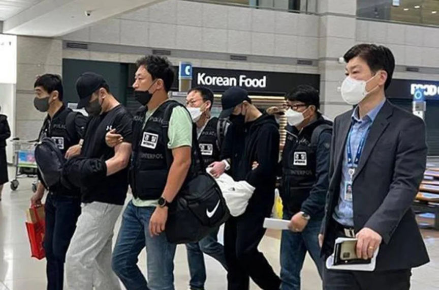
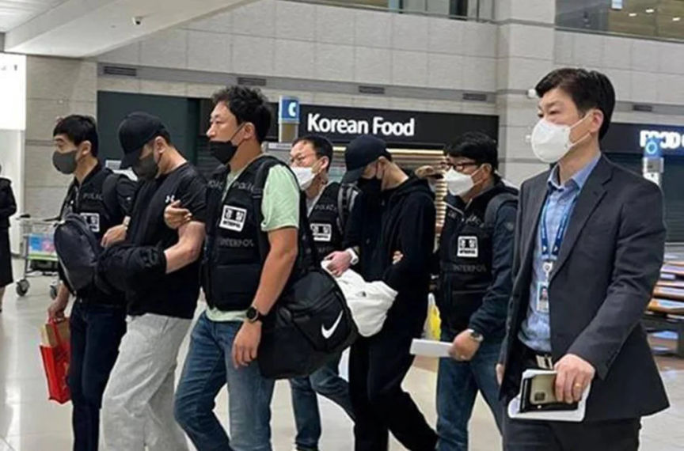

Interpol Seizes $130 Million Worldwide from Cybercriminals
~1 min read | Published on 2022-11-28, tagged Cryptocurrency, Seized using 247 words.
Interpol has announced the seizure of $130,000,000 million worth of money and virtual assets linked to various cybercrimes and money laundering operations.

The law enforcement operation is codenamed "HAECHI III" and lasted between June 28 and November 23, 2022, allowing INTERPOL to arrest almost a thousand suspects.
This comprised two fugitives wanted by South Korea for their supposed involvement in a Ponzi scheme to embezzle €28 million from 2,000 victims.
Raids conducted by the agency led to the confiscation of 25.83 Bitcoin as well as about $37,000 in different digital wallets. A bank account of one of the suspects, which held $37,000, was also frozen.
Interpol noted that the call center scam led victims to transfer a total of $159,000 and that four cryptocurrency wallets used by the scamsters were seized. In all, nearly 2,800 bank and virtual-asset accounts that were used to launder the illicitly obtained funds were blocked over the course of the five-month operation.
Per law enforcement, the probe specifically singled out a wide range of online financial crimes such as voice phishing, romance scams, sextortion, investment fraud, and money laundering associated with illegal online gambling.
The intergovernmental organization said the coordinated exercise uncovered a number of emerging cybercrime trends, including variations of romance scams and sextortion, not to mention the use of encrypted messaging apps for promoting bogus crypto wallet schemes.
Operation HAECHI-III also comes exactly a year after Interpol publicized the arrests of more than 1,000 cybercriminals and the recovery of $27 million as part of HAECHI-II.
Sources: Interpol announcement

The law enforcement operation is codenamed "HAECHI III" and lasted between June 28 and November 23, 2022, allowing INTERPOL to arrest almost a thousand suspects.
This comprised two fugitives wanted by South Korea for their supposed involvement in a Ponzi scheme to embezzle €28 million from 2,000 victims.
Raids conducted by the agency led to the confiscation of 25.83 Bitcoin as well as about $37,000 in different digital wallets. A bank account of one of the suspects, which held $37,000, was also frozen.
Interpol noted that the call center scam led victims to transfer a total of $159,000 and that four cryptocurrency wallets used by the scamsters were seized. In all, nearly 2,800 bank and virtual-asset accounts that were used to launder the illicitly obtained funds were blocked over the course of the five-month operation.
Per law enforcement, the probe specifically singled out a wide range of online financial crimes such as voice phishing, romance scams, sextortion, investment fraud, and money laundering associated with illegal online gambling.
The intergovernmental organization said the coordinated exercise uncovered a number of emerging cybercrime trends, including variations of romance scams and sextortion, not to mention the use of encrypted messaging apps for promoting bogus crypto wallet schemes.
Operation HAECHI-III also comes exactly a year after Interpol publicized the arrests of more than 1,000 cybercriminals and the recovery of $27 million as part of HAECHI-II.
Sources: Interpol announcement